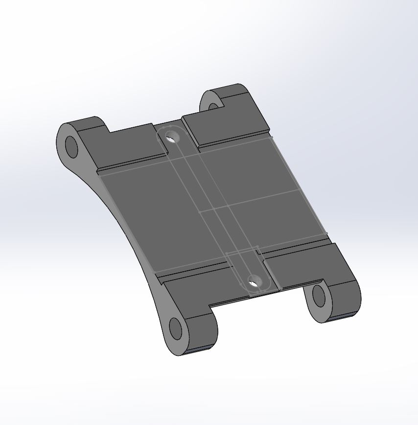
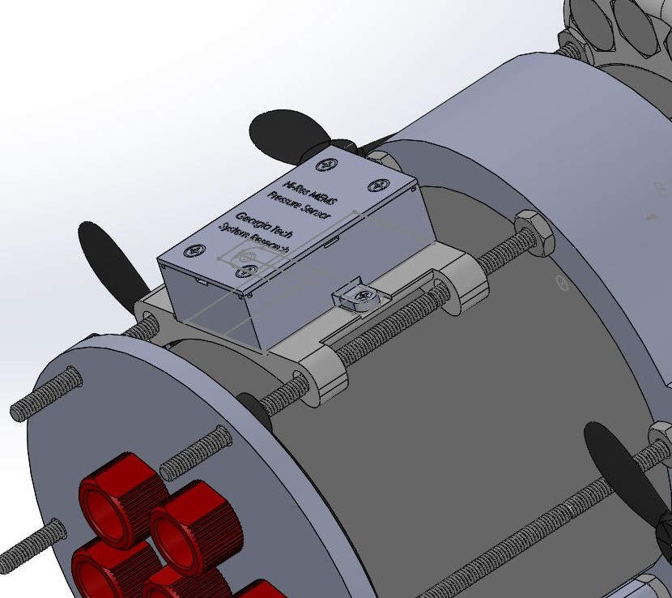
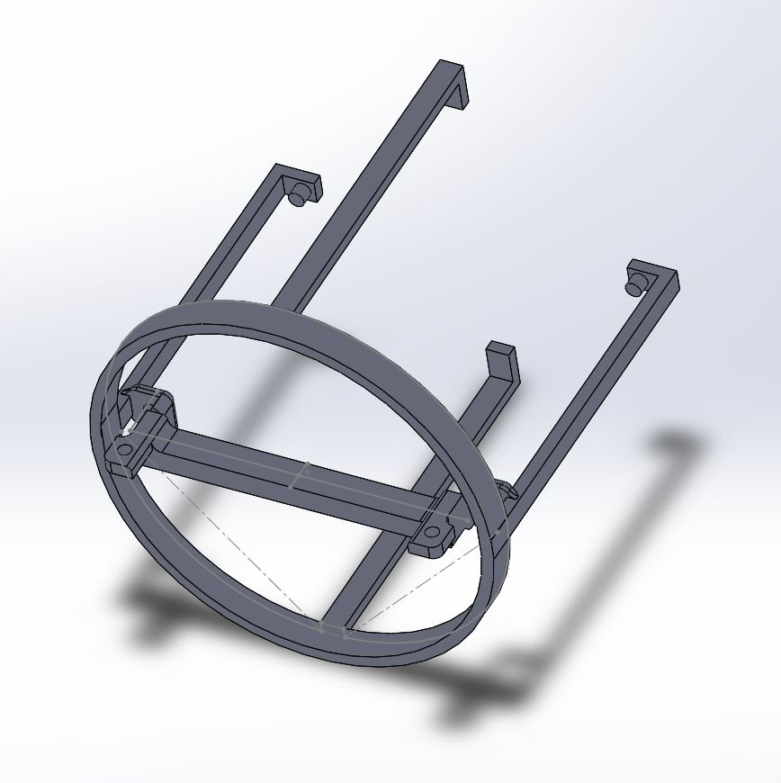
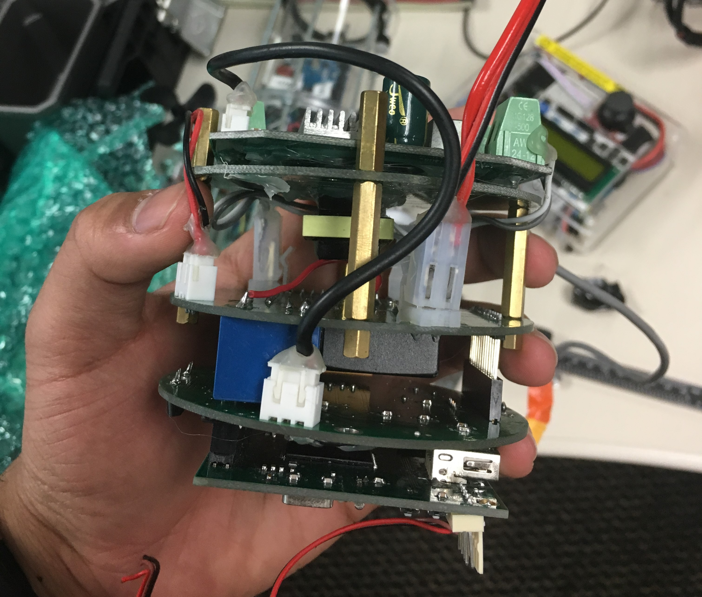
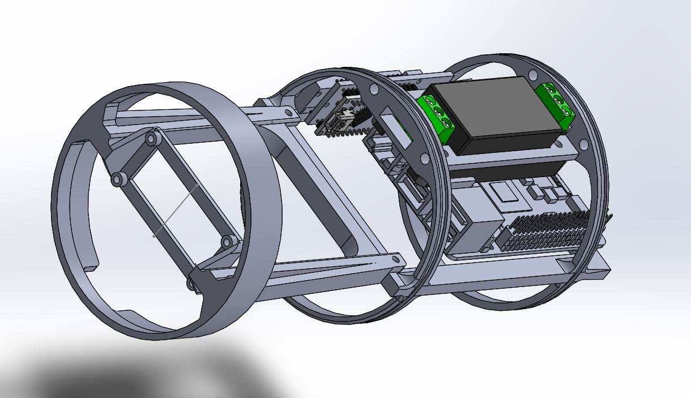

The GT-MUR:

Depth Sensor Mount
- Replace zipties securing depth sensor with 3D Printed Sensor Mount
- Minimize material
- Configure mount to reduce water drag
- Out of the way of wires/external components of GT-MUR
- Designed in Solidworks the above part
- Slides onto rails traversing GT-MUR for easy installation
Task:
Parameters:
Depth Sensor Mount(Left) and the Mount Installed on the GT-MUR (Right):


Solution:
Acoustic Modem Mount
- Design a rack to mount 4 tier PCB acoustic modem inside GT-MUR's hull
- Connect to internal PCB rack
- Keep acoustic modem secure
- Skeletal to fit inside MUR's housing
- Designed in Solidworks the above part
- Modem can be slipped into the mount and screwed in
- Mount's arms hook onto modem's PCB screw holes
Task:
Parameters:
Modem Mount(Left) and the Modem (Right):


Solution:
Modem Mount (Left) attached to PCB Rack (Right):

Camera Installation
- Design and install mount for Duo M Camera to be housed inside the GT MUR
- Design and install viewport on hull for camera
- Connect to internal PCB rack in the GT-MUR
- Stable and position camera flush with viewport
- Watertight
- Designed in Solidworks above part for Camera Mount
- Drilled 2" hole in one of MUR's endcaps and epoxied on 1/8" glass disk to create viewport
Task:
Mount Parameters:
Viewport Parameters:
Duo M Camera Mount (Left) attached to PCB Rack (Right):
Solution:
Camera mounted to installed Camera Mount seen through Glass Viewport:
.JPG)
Testing
- Test and document new parts on GT MUR
- Ensure that MUR functions as advertised
- Performed depth tests to confirm MUR is watertight and resists water pressure deformation
- Wrote manual to help users seal MUR for water tests
Task:
Solution: